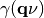
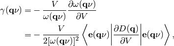
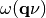
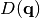
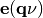
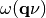
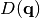
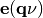
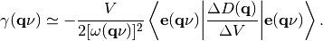
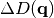

Calculation of mode Grüneisen parameters¶
How to run¶
It is necessary to run three phonon calculations. One is calculated at the equilibrium volume and the remaining two are calculated at the slightly larger volume and smaller volume than the equilibrium volume. The unitcells at these volumes have to be fully relaxed under the constraint of each volume.
Let files named POSCAR-unitcell, FORCE_SETS (or FORCE_CONSTANTS
with --readfc option),
and optionally BORN stored in three different directories
named, e.g., equiv, plus, and minus.
The calculated results are written into the file gruneisen.yaml.
In the example directory, an example of silicon (Si-gruneisen) is
prepared. A calculation along paths in reciprocal space can be made by
% gruneisen orig plus minus --dim="2 2 2" --pa="0 1/2 1/2 1/2 0 1/2 1/2 1/2 0" --band="1/2 1/4 3/4 0 0 0 1/2 1/2 1/2 1/2 0.0 1/2" -p -c POSCAR-unitcell
{kind=link}
In this calculation, neighboring q-points in each band segment are
connected considering their phonon symmetry to treat band crossing
correctly. Therefore the phonon frequencies may not be ordered in
gruneisen.yaml. In the plot (-p option), the colors of phonon
bands correspond to those of mode Grüneinen parameters.
A calculation on a reciprocal mesh is made by
% gruneisen orig plus minus --dim="2 2 2" --pa="0 1/2 1/2 1/2 0 1/2 1/2 1/2 0" --mesh="20 20 20" -p -c POSCAR-unitcell --color="RB"

In the plot (-p option), the colors of mode Grüneinen parameters
are set for band indices with ascending order of phonon frequencies.
Mode Grüneinen parameter may diverge around  -point. In
the above example for band paths, mode Grüneinen parameters are
calculated at -point, but
-point. In
the above example for band paths, mode Grüneinen parameters are
calculated at -point, but gruneisen script avoids
showing the values on the plot. Instead the values at the neighboring
q-points of -point are used for the plot.
Abinit, Pwscf, Wien2k, and CRYSTAL interfaces¶
--abinit, --pwscf, --wien2k, or --crystal options can be specified
for corresponding calculators and the crystal structure file format
should be different from that of the VASP format. An Abinit example is
as follows:
% gruneisen orig plus minus --abinit --dim="2 2 2" --pa="0 1/2 1/2 1/2 0 1/2 1/2 1/2 0" --band="1/2 1/4 3/4 0 0 0 1/2 1/2 1/2 1/2 0.0 1/2" -p -c Si.in
Command options¶
If one of --abinit, --pwscf, --wien2k, or --crystal options is
specified, the interface mode is changed to it. The unit conversion
factor to THz is appropriately selected and its crystal structure file
format is accepted. If none of them is specified, as the VASP
interface mode is invoked as the default interface.
The following command options can be used for all interface
modes. They work similarly to those for phonopy script.
--dim--mp,--mesh--band--pa,--primitive_axis--readfc--band_points--nac--factor--nomeshsym-p-c-s,--save-o
The --color option (RB, RG, RGB) is used to gradually
change the marker colors with respect to band indices. For the
mesh-sampling plot, a few more options to control matplotlib
parameters are prepared.
Method to calculate mode Grüneisen parameters¶
Mode Grüneisen parameter  at the wave
vector  and band index
and band index  is given by
is given by

where  is the volume,  is the
phonon frequency,  is the dynamical matrix,
and  is the eigenvector. This is
approximated by the finite difference method:
is the volume,  is the
phonon frequency,  is the dynamical matrix,
and  is the eigenvector. This is
approximated by the finite difference method:

The gruneisen script requires three phonon calculations
at corresponding three volume points. One is for eigenvectors at the
equilibrium volume () and the remaining two are for  with slightly larger and smaller volumes than
.